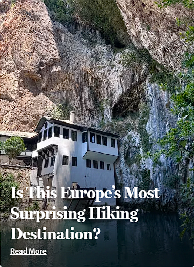
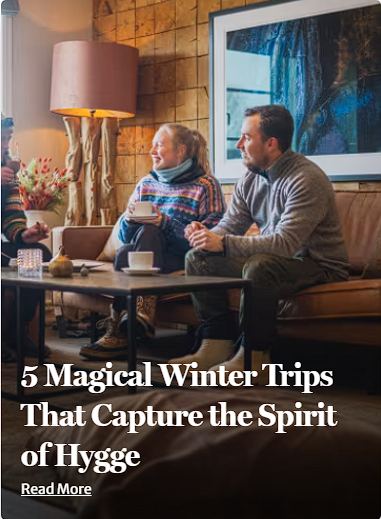
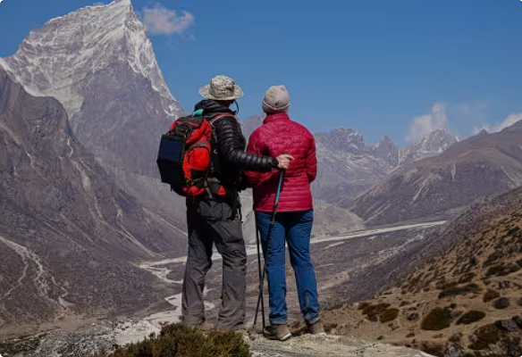
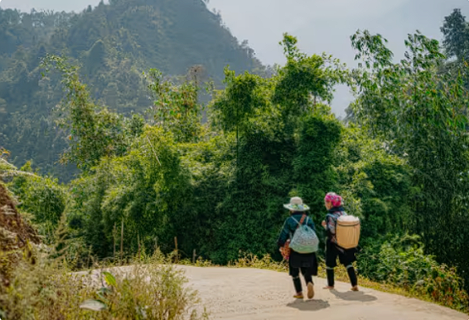

Editor's Choice
If you only read three things today, make it this terrific trio….



Straight from the adventure trail, our guides and travel experts share unrivalled insights, hard-earned advice, and a little wanderlust for your next trip
If you only read three things today, make it this terrific trio….


Weimar is unlike almost any other town in Europe. Nestled in the heart of Thuringia, its modest size belies its monumental impact on Western literature, philosophy, music, and design. Follow our curated 3-day itinerary to experience the very best of Weimar.
• Morning: Begin your trip at Frauenplan with a visit to the Goethe National Museum and Goethe's residence, where Johann Wolfgang von Goethe lived for nearly 50 years. Walk through preserved rooms, his personal library, and the peaceful garden where Faust took shape.
• Afternoon: Stroll over to the Schiller House on Schillerstraße to experience the home life of Germany's famed dramatist, Friedrich Schiller.
• Evening: Enjoy traditional Thuringian cuisine at a historic tavern in the Old Town.
• Morning: Step into the breathtaking Rococo Hall of the world-famous Duchess Anna Amalia Library, housing centuries of rare manuscripts.
• Afternoon: Walk down into the lush Park an der Ilm, an 18th-century English landscape garden created with Goethe's guidance. Visit Goethe's Garden House (Gartenhaus) nestled by the riverbank.
• Evening: Catch a concert or drama performance at the Deutsches Nationaltheater (DNT).
• Morning: Take a short ride to Belvedere Palace, the yellow Baroque summer residence of the Dukes of Saxe-Weimar-Eisenach, complete with an extensive orangery and manicured gardens.
• Afternoon: Head north to Tiefurt House, surrounded by peaceful parkland along the Ilm river, ideal for an afternoon stroll.
In 1919, architect Walter Gropius founded the modern design school known as the Bauhaus in Weimar. Seeking to combine fine art, craft, and technology, the movement changed 20th-century art and architecture forever.
Beyond its intellectual history, Weimar boasts a rich and comforting culinary heritage. Here is where and what to eat on your next visit:

Tired legs, early alarms and the odd uphill battle. So why do people come back for more? Here are seven very good reasons
 Jenna Berndt
Jenna Berndt

From the best adventures to what to pack, Tri Nguyen answers the questions he's asked most after years leading adventures across Vietnam
 Tri Nguyen
Tri Nguyen

Test yourself on a rewarding trek in China or take it slow in the sacred isles of Indonesia? Discover your Travel Style
 Kristen Whitla
Kristen Whitla

Alpine passes, Adriatic islands, Cappadocian valleys and Tuscan tables, but how would you discover the best of the continent?
 Kristen Whitla
Kristen Whitla

Among ancient forests, remote villages and resilient cities, travel writer Ally Wybrew discovers the unexpected on her Exodus adventure
 Ally Wybrew
Ally Wybrew

Tuscany has its own gold rush. There are no pickaxes involved – just four-legged experts, family secrets and something delicious underground
 Kristen Whitla
Kristen Whitla